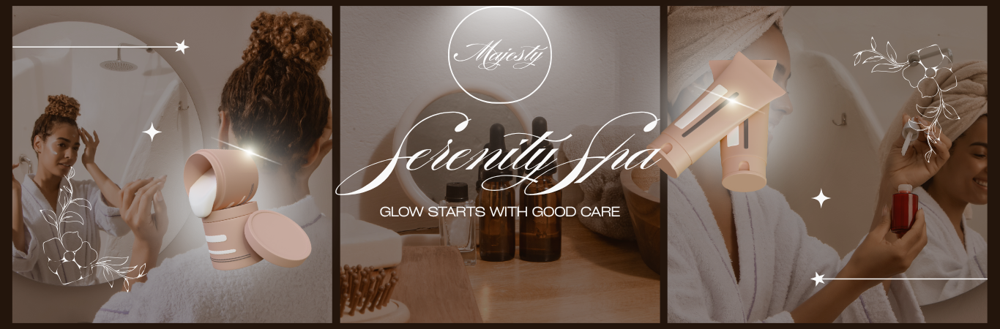

Welcome To Majesty Senerity Spa
Experience the ultimate in relaxation and wellness

Discover a world of tranquility and rejuvenation at Majesty Senerity Spa. Our expert therapists are dedicated to providing you with the highest quality treatments in a serene environment.
Whether you're looking for a soothing massage, revitalizing facial, or a complete spa day experience, we have a range of services to cater to your needs. Our luxurious facilities and personalized approach ensure that every visit is a memorable one.
We invite you to explore our website to learn more about our services, meet our team, and find out how you can book your next spa experience. At Majesty Senerity Spa, your well-being is our top priority.
Thank you for choosing Majesty Senerity Spa. We look forward to welcoming you and helping you achieve a state of complete relaxation and serenity.
| Service | Description |
|---|---|
| Swedish Massage | A relaxing full-body massage that relieves tension and promotes overall well-being. |
| Deep Tissue Massage | Targeted massage that focuses on deeper layers of muscles to alleviate chronic pain and stiffness. |
| Facial Treatment | A rejuvenating facial that cleanses, exfoliates, and nourishes the skin for a radiant glow. |
| Body Scrub | An exfoliating treatment that removes dead skin cells, leaving your skin soft and smooth. |
| Hot Stone Massage | A therapeutic massage that uses heated stones to relax muscles and improve circulation. |
| Manicure & Pedicure | A pampering treatment for your hands and feet, including nail shaping, cuticle care, and polish application. |
Be the first to experience the ultimate in relaxation and wellness!Book your appointment today and indulge in the luxury you deserve.
Our Operating Hours are:
- Monday to Friday: 9 AM - 8 PM
- Saturday: 10 AM - 6 PM
- Sunday: Closed
- We are closed on public holidays.
Feel free to visit us during these hours for a quick pampering session or to book an appointment.
Our Special Offers
Take advantage of our exclusive spa packages and special offers designed to enhance your spa experience. Treat yourself or a loved one to a day of pampering and relaxation.
Check our website regularly for the latest promotions and discounts on our services. We are committed to providing you with exceptional value and unforgettable spa experiences.
Don't miss out on these limited-time offers. Book your appointment today and enjoy the benefits of our luxurious spa treatments at a special price. Your journey to relaxation and wellness starts here!
Our Highlights
- Luxurious Spa Environment: Immerse yourself in a serene and tranquil atmosphere designed to enhance your relaxation experience.
- Expert Therapists: Our team of skilled therapists is trained in various techniques to provide you with the highest quality treatments.
- Personalized Treatments: We offer customized treatments tailored to your specific needs and preferences.
- Premium Products: We use only the finest products to ensure the best results for your skin and body.
- Exceptional Customer Service: Our friendly staff is dedicated to making your spa experience enjoyable and memorable.
Take note that our walk-in services differ from our booking services due to their spontaneous nature.
appointments are not available for walk-in services.
For personalized treatments, we recommend booking an appointment in advance to ensure availability and a tailored experience.
.png)
Our Testimonials
| Client | Testimonial | Service Received | Rating |
|---|---|---|---|
| Jane Doe | "I had an amazing experience at Majesty Senerity Spa. The staff was friendly and professional, and the massage was incredibly relaxing. I left feeling rejuvenated and refreshed!" | Hot Stone Massage | 5/5 |
| John Smith | "The facial treatment I received was top-notch. My skin has never felt better! I highly recommend Majesty Senerity Spa to anyone looking for a luxurious spa experience." | Facial Treatment | 5/5 |
| Emily Johnson | "I treated myself to a body scrub and it was heavenly. The ambiance of the spa is so calming, and the staff made me feel pampered from start to finish." | Body Scrub | 5/5 |
| Michael Brown | "I had a hot stone massage and it was incredible. The therapist knew exactly how to work out my tension and I left feeling completely relaxed." | Hot Stone Massage | 5/5 |
| Sarah Williams | "I had a manicure and pedicure and it was a wonderful experience. The staff was attentive and the results were beautiful. I will definitely be coming back!" | Manicure & Pedicure | 5/5 |
| David Lee | "I had a deep tissue massage and it was exactly what I needed. The therapist was skilled and attentive, and I left feeling much better than when I arrived." | Deep Tissue Massage | 5/5 |
Join our satisfied clients and experience the ultimate in relaxation and wellness!